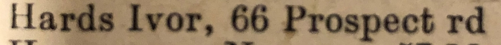

George Francis Horn 1907 - c1971
[ Home ] | [ Calendar ] | [ Surnames Index ] | [ Family History ]A general heavy worker foreman and the son of Herbert Horn (a carter) and Mabel GibsonGeorge Horn, the second cousin twice-removed on the father's side of Nigel Horne, was born in Margate, Kent, England on Mar 8, 19071.
George spent all of his life in Kent, England. Throughout his life, he lived in several places around the county: at 84 Byron Road in Margate on Apr 2, 19115; at Iona, Nash Road in Margate on Sep 29, 19391 (when he was living with his father, Herbert James); at 7 Poet's Corner in Margate in 19594; and at 128 Byron Avenue in Margate in 19653. He served in the army from 1924 to 1928 (regiment: The Royal Regiment Of Artillery; Service number: 754784).
He died c. May 1971 in Thanet, Kent, England2.
Parents
- Herbert James was born on Feb 14, 1865
- Mabel Ellen was born on Jan 15, 1873
Citations
- 1939 Register - Findmypast (was the head of the household)
- England & Wales deaths 1837-2007 - Findmypast
- 1965 Kelly's Thanet Directory
- 1959 Kelly's Thanet Directory
- 1911 Census for England & Wales - Findmypast (was age 4 and the son of the head of the household)
Media
Thanet Advertiser 13 Apr 1928
1965 Kelly's Thanet Directory

George Francis Horne

1959 Kelly's Thanet Directory

1939 Register - TNA/R39/1752/1752G/010/06
1939 Register - TNA/R39/1752/1752G/010/08
1911 Census for England & Wales - GBC/1911/RG14/04491/0861/8
England & Wales deaths 1837-2007 - BMD/D/1971/2/AZ/000554/123
England & Wales births 1837-2006 - BMD/B/1907/2/AZ/000300/068
Royal Artillery attestations 1883-1942 - GBM/ROYALART/286304
World War 2 Allies Collection - WW2/03322152
Family Tree

Generated by ged2site. Last updated on Nov 13, 2024